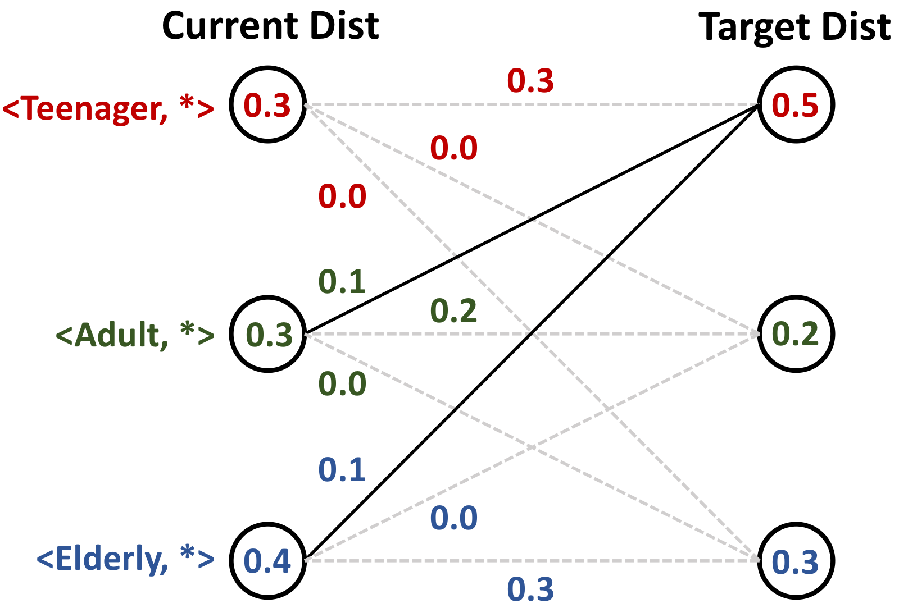

DPSyn: Experiences in the NIST Differential Privacy Data Synthesis Challenges
Journal of Privacy and Confidentiality (JPC), 2021

Abstract
We summarize the experience of participating in two differential privacy competitions organized by the National Institute of Standards and Technology (NIST). In this paper, we document our experiences in the competition, the approaches we have used, the lessons we have learned, and our call to the research community to further bridge the gap between theory and practice in DP research.
Resources
Citation
@inproceedings{LZW21,
author = {Ninghui Li and Zhikun Zhang and Tianhao Wang},
title = {{DPSyn: Experiences in the NIST Differential Privacy Data Synthesis Challenges}},
booktitle = {{Journal of Privacy and Confidentiality}},
publisher = {Journal of Privacy and Confidentiality},
year = {2021},
}